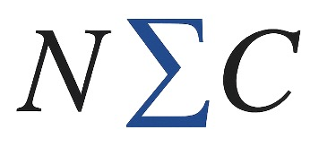

Núcleo Bertrand Russell para Excelência Científica

O Núcleo Bertrand Russell para Excelência Científica (NEC) é um órgão de consultoria criado para fomentar e aprimorar projetos científicos no âmbito da UERJ, com prioridade para iniciativas conduzidas por docentes da Faculdade de Ciências Médicas. Sua atuação oferece suporte integral ao projeto, da elaboração e submissão ao registro e à publicação, com foco em rigor metodológico, excelência e inovação. O NEC também estimula a cooperação entre setores acadêmicos, técnicos e administrativos, fortalecendo a integração entre pesquisadores e promovendo parcerias internas e externas. Quando houver atendimento a pessoas ou instituições fora da UERJ, a prestação do serviço será mediada pelo CEPUERJ, conforme o regimento.
Como trabalhamos
Ferramenta interativa
Console R no navegador
Experimente análises em R diretamente aqui, sem instalar nada. O ambiente é executado localmente no seu navegador via WebAssembly.
Os cálculos ocorrem inteiramente no seu dispositivo. Nenhum dado é enviado a servidores externos.